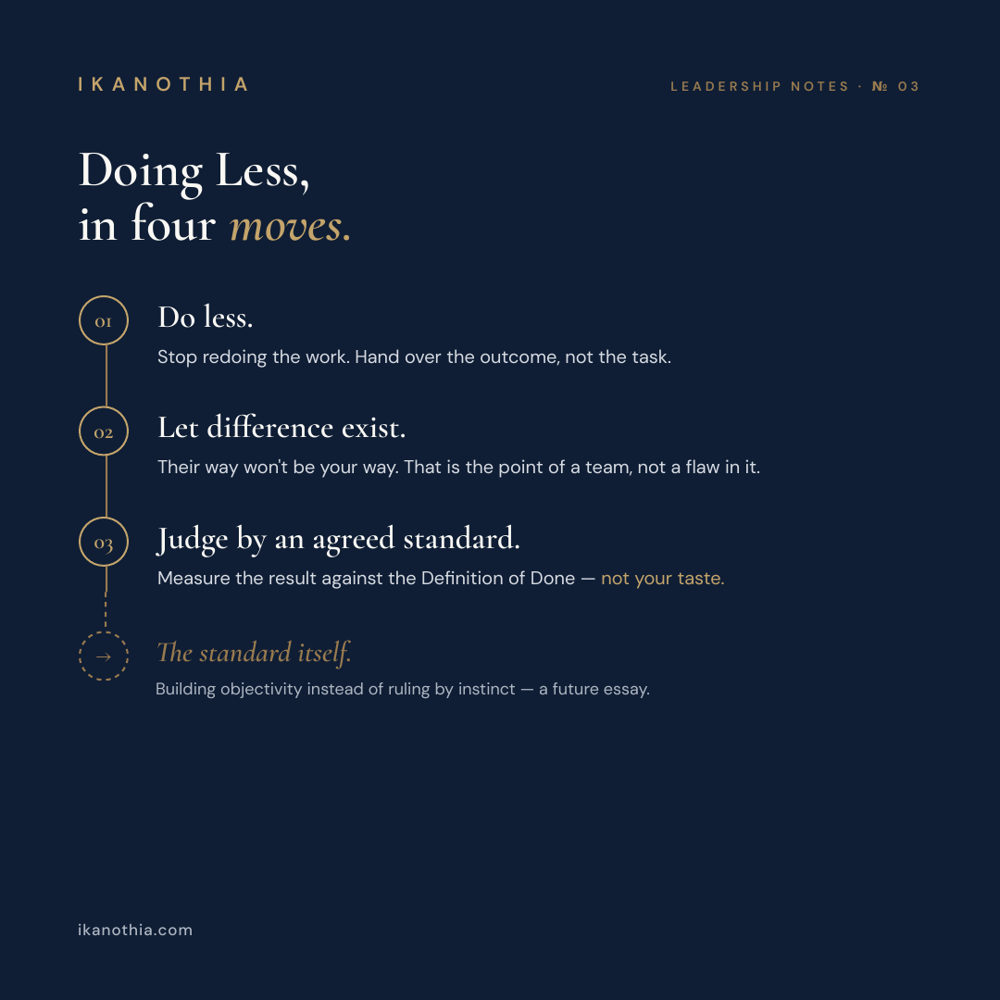

The Hardest Part of Managing Is Doing Less
By Vivianne Kieffer
Delegation isn't handing out tasks — it's transferring outcomes, and judging the result against an agreed standard instead of your own taste.
Doing Less, in four moves.
01
Do less.
Stop redoing the work. Hand over the outcome, not the task.
02
Let difference exist.
Their way won't be your way. That is the point of a team, not a flaw in it.
03
Judge by an agreed standard.
Measure the result against the Definition of Done — not your taste.
Coming next
The standard itself.
Building objectivity instead of ruling by instinct — a future essay.
